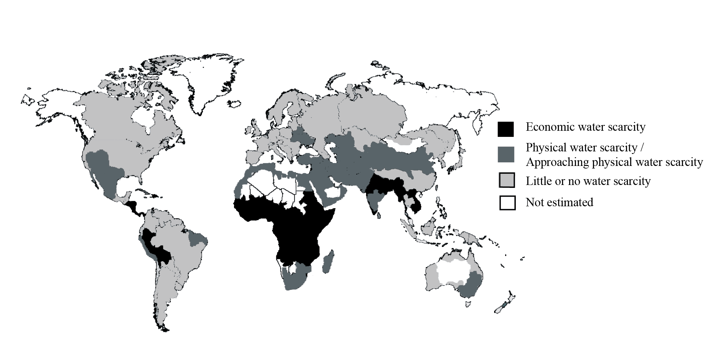

| Date | Marks available | 5 | Reference code | .1.bp.3 | |
| Level | SL and HL | Paper | 1 | Time zone | |
| Command term | Explain | Question number | 3 | Adapted from | N/A |
Question
The diagram shows the world distribution of areas of water scarcity.

[Source: modified from Comprehensive Assessment of Water Management in Agriculture 2007. Water for Food, Water for Life: A comprehensive Assessment of Water Management in Agriculture. London: Earthscan and Colombo: International Water Management Institute]
Define physical water scarcity.
Define economic water scarcity.
Describe the global pattern of water scarcity shown on the map.
Explain the factors affecting access to safe drinking water.
Markscheme
This should be defined as when water resources are at or approaching unsustainable levels [1 mark]. It depends on water demand [1 mark] and implies that arid areas are not necessarily water scarce.
This should be defined as a condition where economic/institutional/human restraints limit access to water [1 mark]; water is available locally but not accessible for everyone [1 mark].
The pattern shows economic water scarcity mainly in the tropics/lower income countries [1 mark], and physical water scarcity mainly in low rainfall areas (deserts) [1 mark]. Some reference to areas with little or no water scarcity should be allocated 1 mark.
The response should demonstrate knowledge of what safe drinking water is [1 mark]. Depending on the scale considered, the main factors would be increasing population, the rising per capita consumption of water and the absence of, or failures in, the management of water, although other possible factors (global climate change, infrastructure developments) could be mentioned [2×2 marks]. Other valid factors should be credited.